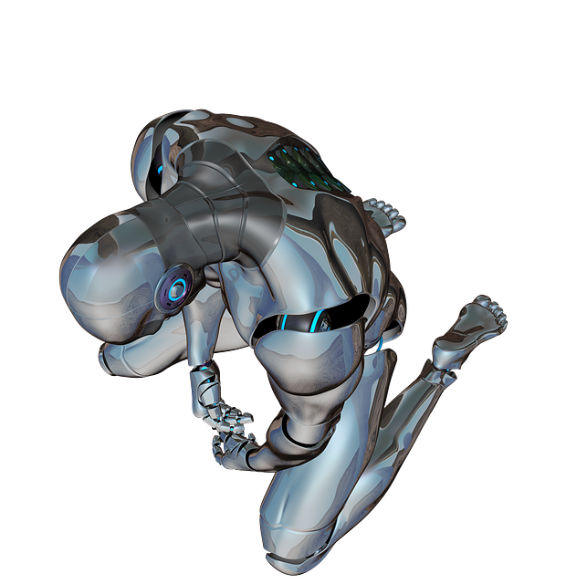

user1@shell: ~/augments.game
Welcome to Augments, a game of changes.
This game contains disturbing images and descriptions of violence; proceed at your own risk.
Press <enter> to begin.

It's a beautiful autumn day. You're walking alone through the woods, thinking.
Suddenly, you get an eerie feeling, and a voice speaks as if from nowhere, whispering "...go home, go home, go home..."
Disembodied voices are creepy, but are they creepy enough to pay attention to?

Just as you decide not to leave, a giant, horrid, mechanical spider lunges out at you from behind a nearby bush.

The horrible, deadly spider stabs at you with sharp mechanical pincers, slicing through your abdomin. You struggle, but bleed to death in moments.
That was a poor choice.
Giant mechanical spiders deserve caution.

You raise your arm, ready to fire -- but suddenly realize your projectile arm is still at home, in your closet. You are unarmed. What should you do?
You pick up a large rock nearby and prepare to heave it at the beast -- but as soon as the spider sees the rock, it flees, scurrying quickly through the brush down the path, soon veering off and crashing deep into the woods in the distance.
Well that was odd. Scary, but odd. You didn't realize the woods had creatures such as these...mechanical pets are one thing, but crazy contraptions like that are usually in labs or museums.
Is it safe to keep going? This one seemed to fear you more than anything, but would any others be the same? Perhaps the strange, disembodied voice knew what it was talking about?
You run down the path that the spider took, rock in hand. As you enter the more densely-wooded area, your shoulder tickles as your auto-lights click on. Good -- at least you didn't leave that at home.
The spider-thing can't be far ahead, but you see and hear nothing. You listen carefully, but without audio enhancement you know you don't have much chance of finding it now if it was moving fast.
You wander back on the main path, thinking. It was strange that the spider, huge, sturdy, and such an obvious threat to you while you're unarmed, would run from a rock. Regardless, it's strange that the woods had creatures such as these...mechanical pets are one thing, but crazy contraptions like that are usually in labs or museums. And then there's the voice...if it was real, did it tie in to the spider? But the spider seems not to have been much of a threat in the end...hm.
You charge off into the woods, crashing through the brush for long moments until your panic fades long enough for you to pause.
You listen, but there's no sound. Perhaps you've evaded the spider? But now you're fairly well lost. If you try to find your way back out, you might end up running into the spider again. But if you do nothing, you're a goner. Hm....
You strike off into the woods at a decent pace. You know you're not far into the woods, so you figure it shouldn't be far to the outside. After walking for some time, however, you realize you definitely went in the wrong direction. The woods are denser here, little light gets through, and there are strange noises echoing softly from all directions.
You don't have many options, though, so you keep going. The noises around you grow louder, and you begin to hear periodic crunching, as though the leaves around you are underfoot of numerous creatures bustling to and fro. It's growing dark, and the fear begins to rise within you. You slow to a crawl, peering around you as you plunge on.
Darkness finally falls, and you are well and truly lost. The noises are everywhere now, small lights pervade the darkness in strange patterns that serve only to blind you and confound you further. You hear one noise getting louder -- coming closer? Louder, louder, louder. You turn towards the source, but it seems to move all about you. The panic rises, and you bolt. Before you've gone two feet, a --crack-- resounds, and then again, --crack--.
Pain floods you. You look down, and you see...you've been shot. Badly. More shots ring out as you fall to your knees. It's all over, and you'll never even know why....
After stumbling through the darkness for some time you notice a glint nearby. Following it to its source, you observe a tall metal wall hidden behind a copse of trees. Tracing it with your hand, you notice that it connects to another -- you are at a corner of some structure. You follow the wall, carefully, for it is surprisingly well hidden -- it curves to and fro, hugging the trees which serve to hide it with their shade. Vines grow along the wall, and leaves cling to it. Nothing but the soft metal gleam and the touch of your hand against it give its presence away.
A surprising amount of time passes before you reach a door -- a door that, astoundingly, opens as you near it. Whoever built this structure must not have expected anyone to find it.
You enter, and lights spring on, revealing a long hallway with doors sprouting at common intervals. These doors, however, all have locks -- all different locks, by the look of it. You wander down the hall, cautious but unable to resist. One door has a window near it, and you peek in. In it, you see a spider just like the one that confronted you. Actually, as you peer closer, you see there's more than one -- there are dozens, standing near one another in receding rows. They are unmoving, clearly powered down. Near the spiders are other automotons of unknown design and purpose. You shudder. "What possible purpose could this serve?" you wonder out loud.
"How kind of you to ask," a voice answers you.
You start, for the voice is the voice you heard as you entered the woods. You whirl about, and see the face of a severely augmented man who has just emerged from a nearby door.
"I've been watching you" says the man, "I set up that perimiter alarm specifically to keep nosey strangers like you away. Why did you ignore my warning and my sentry?"
"You sent the spider? -- yeah? Well, the woods are right near my house. Why shouldn't I wander? And the spider only made me more curious."
The man sighs. "I should have expected as much from a fellow augment. Those who choose to enhance themselves are so often of the rash variety. At any rate...you are here, and you've asked about the purpose of this lab, so I'll tell you. I am building the future.
"You see I, like you, am a man who values the future. For decades I have followed the advancements of augmentation with gusto. Half a lifetime ago I was a simple businessman with a healthy interest in tech. When voluntary amputation and supplementation became legalized, I was one of the first to jump on the trend -- and realize its full potential. At the time, of course, augmentation was just a fad, most augments were for style, minor convenience, gadgetry like legs that could help you win a race or an enhanced eye for photography enthusiasts. But I knew better. I knew what augmentation could -- and would -- become. So I dedicated myself to the future, invested in augmentation, switched my focus in business, and soon was earning millions in this burgeoning new trend. But before long, I was stymied. The governments were putting limit after limit on the kinds of augmentation that were legal. Certain enhancements, they declared, were unnecessary or dangerous. Some, like projectile arms, required a permit and were restricted to certain areas. I could tell things were going downhill. The future of humanity does not lie in little trivial augmentations, but rather in the absolute supplementation of our own bodies -- a true mingling of biology and technology, surpassing our evolutionary limits and becoming true supermen.
"So I began to do my own research and development. I sunk millions of my own dollars into developing illegal but fantastic augmentations. That spider you discovered -- did you know there is a man in that? Well, not a whole man, but the brain of one, and several other organs besides. I have made augmentations you can hardly conceive of -- whole-body transformations that can be swapped out at a moment's notice, biological manipulations that allow the user to transform their own complection at a whim, computer interfaces that shuffle information between organism and technology as though they were one. I have built the future. All I await now is my opportunity to make the world aware of just how much it's missing."
"How can you possibly?" you ask. "Even leaving aside how unethical some of your creations probably are, it's so illegal that you're more likely to be put away for life than celebrated."
"Ahh. I see you underestimate my abilities. You do not realize the capabilities of my establishment, my creasions, and even myself -- for you see, I have enhanced myself, too, far more than you can possibly imagine. For instance --" he clapped, and from his hands sprang a fire that flew in mid-air, and as he moved his hands about, so to the fire moved, flew, transformed. He brought his hands together again and the fire vanished.
"And that is just one of the many, many abilities I have provided for myself. I alone could destroy a city or an army. Alongside my creations...I am unstoppable. The world will learn that it cannot prevent me from existing, and when it does, it will see the power of my inventions and clammer for them, yearn for a piece of the future I am creating here. I will be wealthy, oh so wealthy, and powerful besides -- even more so than now -- and the world will have the future it deserves."
"I see your wisdom," you accede, "you really seem to be building something amazing. You know, I wouldn't mind getting in on that, if you're willing. I have some knowledge of technology myself, I could be pretty helpful."
"Oh good. I was hoping you'd offer," he laughs, "the only other alternative was to kill you! But I'd much rather have you on board. Come, let me tell you more of my...of our future."
You walk off with the man, striding down the hall past all the rooms housing the technology of the future, and you think of all the astounding things he's already accomplished, and how many more you can accomplish working together. A smile spreads on your face as you listen to him tell of his latest ideas. You have a feeling you've embarked on something wonderful. You're about to build the future, a WORLD OF AUGMENTATION.
-----
You've come to the conclusion of your journey. You've chosen a risky but fascinating path, full of hope for the future. Other potentials await you, though, along other paths of reasoning. Would you care to explore them?
You know you need to get out of here, away from this madness. You thank the man for his interesting story, and start to leave.
"Oh no," the man says, "oh, no no no. That won't do. You can't leave, not now. Are you sure you wouldn't like to learn more?"
You're quite sure. "I'm quite sure."
"That's really too bad. I was hoping to recruit your help, as a fellow man of technology. Well, unfortunately, if you won't help, that means you might betray my secrets before I am ready...goodbye, stranger, it has been interesting talking."
The man's yellow eyes glow, and shockwaves seem to leap forth from them. Your body feels warm, both cells and circuits overheating. You start to get woozy, and fall to the floor.
You are broken. The energy leaves your body and you start to fade. Perhaps you should have known a man such as this wouldn't let you leave so easily.
You are dead. Would you like to try again? Maybe you won't die this time (maybe).
You returned home uneventfully.
Well, you may never understand what happened in the woods today, but at least you're safe and sound!
For now....
For a while you talk to the owl. It seems to ignore you. Suddenly, it cocks its head towards a hollow in an old tree.
You reach inside, and pull out a mysterious wooden flute.
"Hmm, now I've seen everything".
One thing about yourself that you know for sure - you hate owls/
"Hey! Owl! You're stupid-looking!"
The owl cocks its head at you bemusedly.
What a stupid owl, you laugh.
Suddenly, the owl swoops down and carries you off. It is a big owl indeed.
You are never seen again.
You walk up to the pile of rocks.
It's just a pile of rocks, you think.
You walk up to the tree. You reckon it to be mighty old. Maybe a bazillion years or more. You notice a strange carving on the tree.
The carving depicts a great monster, twenty feet tall or more.
"Pshh. A huge monster, have you ever heard anything so ridiculous, Smeemog? ... Smee?"
You turn around, but in fact Smeemog has been eaten by a giant monster.
The monster devours you as you beg for mercy.
You play the flute, and the troll disappears in a cloud of smoke.
"I'll get you, Owl!" he curses.
You and Smeemog escape the forest safely.
You win!
"It is we," you say.
"I care not who ye are! I demand yer bones as payment for trespassin'."
You're boned!